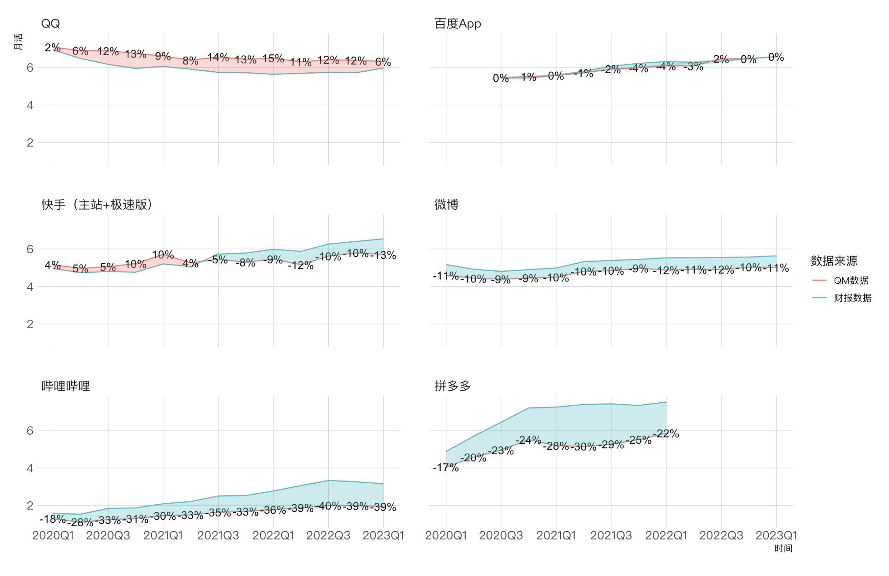

library(tidyverse)
library(hrbrthemes)
library(patchwork)背景介绍
平常看数据图表时，经常见到这么一种图表类型——一张图里有两条折线 A 和 B，当 A 大于 B 时，AB 空间里填充一种颜色；当 B 大于 A 时，AB 空间里填充另一种颜色。
例如《华盛顿邮报》制作的这张图：

探索了一下，发现可以借助 geom_ribbon 函数实现类似功能。
包引入
数据准备和清洗
先导入数据。
apps_mau <- readxl::read_xlsx("QM数据.xlsx", sheet = 1)apps_mau 数据集里面有快手、百度等移动应用的财报月活数据和 QM 监测到的月活数据。
knitr::kable(head(apps_mau))| 时间 | 财报数据 | QM数据 | 应用名 |
|---|---|---|---|
| 2020Q1 | 4.95 | 5.15 | 快手（主站+极速版） |
| 2020Q2 | 4.74 | 4.97 | 快手（主站+极速版） |
| 2020Q3 | 4.79 | 5.05 | 快手（主站+极速版） |
| 2020Q4 | 4.76 | 5.22 | 快手（主站+极速版） |
| 2021Q1 | 5.20 | 5.71 | 快手（主站+极速版） |
| 2021Q2 | 5.06 | 5.26 | 快手（主站+极速版） |
现在要做的是：当 QM 监测数据高于该应用的财报数据时，采用一种颜色填充；当 QM 监测数据低于财报数据时，采用另外一种颜色填充。
对数据进行简单地清洗。
apps_mau_clean <- apps_mau %>%
# 把数据类型从字符串转换成时间，geom_ribbon 的参数需要是数值型变量
mutate(时间 = zoo::as.yearqtr(时间)) %>%
# 因子排序，后续做分面图时按照月活差距排序
mutate(应用名 = fct_reorder(应用名, 财报数据 - QM数据, mean))knitr::kable(head(apps_mau_clean))| 时间 | 财报数据 | QM数据 | 应用名 |
|---|---|---|---|
| 2020 Q1 | 4.95 | 5.15 | 快手（主站+极速版） |
| 2020 Q2 | 4.74 | 4.97 | 快手（主站+极速版） |
| 2020 Q3 | 4.79 | 5.05 | 快手（主站+极速版） |
| 2020 Q4 | 4.76 | 5.22 | 快手（主站+极速版） |
| 2021 Q1 | 5.20 | 5.71 | 快手（主站+极速版） |
| 2021 Q2 | 5.06 | 5.26 | 快手（主站+极速版） |
后续作图时， 由于 geom_ribbon 使用宽数据，geom_line 使用长数据，因此此处需做一个数据类型的转换。
apps_mau_longdata <- apps_mau_clean %>%
# 看QM数据相较于财报数据偏离比例有多少
mutate(diff = (QM数据 - 财报数据) / 财报数据,
diff_format = str_c(round(diff,2) * 100, "%")) %>%
pivot_longer(cols = c('财报数据', 'QM数据'),
names_to = '数据来源',
values_to = '月活') 再来看看转换后的数据。
knitr::kable(head(apps_mau_longdata))| 时间 | 应用名 | diff | diff_format | 数据来源 | 月活 |
|---|---|---|---|---|---|
| 2020 Q1 | 快手（主站+极速版） | 0.0404040 | 4% | 财报数据 | 4.95 |
| 2020 Q1 | 快手（主站+极速版） | 0.0404040 | 4% | QM数据 | 5.15 |
| 2020 Q2 | 快手（主站+极速版） | 0.0485232 | 5% | 财报数据 | 4.74 |
| 2020 Q2 | 快手（主站+极速版） | 0.0485232 | 5% | QM数据 | 4.97 |
| 2020 Q3 | 快手（主站+极速版） | 0.0542797 | 5% | 财报数据 | 4.79 |
| 2020 Q3 | 快手（主站+极速版） | 0.0542797 | 5% | QM数据 | 5.05 |
绘图
绘图时会用到三个 geom 图形函数：geom_line 用来绘制折线，geom_text 用来绘制QM数据相较于财报数据的偏离值，而geom_ribbon 用于给折线差值空间填充颜色。
其中 geom_ribbon 的主要 aes() 参数是 x、y、xmin、ymin、xmax、ymax，表示绘图空间的起始及结束坐标。另外，fill 表示填充的颜色，alpha 表示透明度。
apps_plot <- apps_mau_longdata %>%
# x = 时间的数据类型需是泛 date 类型,否则无效
ggplot(aes(x = 时间)) +
# 分组折线图
geom_line(aes(y = 月活, group = 数据来源, color = 数据来源)) +
# 标注出偏离比例
geom_text(data = apps_mau_longdata %>% filter(数据来源 == 'QM数据'),
aes(y = 月活, label = diff_format)) +
# 折线差值部分填充颜色
geom_ribbon(
data = apps_mau_clean %>% mutate(颜色 = ifelse(财报数据>QM数据, '财报数据', 'QM数据')),
mapping = aes(
# pmin 和 pmax 函数表示在一组向量中分别取最小和最大值
ymin = pmin(财报数据, QM数据),
ymax = pmax(财报数据, QM数据),
fill = 颜色),
alpha = 0.3
) +
facet_wrap(~ 应用名, ncol = 2) +
scale_x_continuous(
# 横轴标签只出现7个
breaks = scales::pretty_breaks(n = 7),
# 横纵标签默认为'2020-01 的格式，将其格式化为 2020Q1'
labels = function(x) format(zoo::as.yearqtr(x), "%YQ%q")) +
guides(fill = 'none') +
theme_ipsum(base_family = 'PingFang SC', grid = 'XY')
需要注意的是，使用 goem_ribbon 有一个缺点：当两条折线交叉的时候，交叉点附近区域无法被正确填色（仔细看的话会发现，快手分面图中两线交汇的地方是空白的）。
这是由于geom_ribbon的工作原理所导致的：geom_ribbon 会以 y 轴的值作为区域的边界，所以当两条线交叉时，那一点的 y 值是不确定的，所以 ggplot2 不会在那个位置上色。
针对这点，暂时没有发现特别好的解决方法。只能等生成 svg 图形后，在 Figma 里手动调整。
注意事项
1、数据结构方面。goem_line 使用的是长数据，而 goem_ribbon 使用的是宽数据。将它们同时绘制在一张图里的时候，需要做数据转换，不能使用同一个数据集。
2、数据类型方面。使用 geom_ribbon 绘图时，x轴和y轴都必须是数值型变量或者时间变量，数据类型不对的话虽不会报错，但也无法绘制出任何结果。这里 debug 了好久才发现问题，最后使用 zoo pacakge 的 as.yearqtr 函数将时间（2020Q1）由字符串格式转换成时间格式。